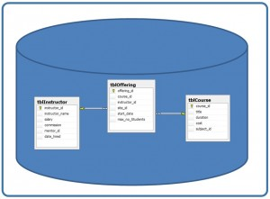
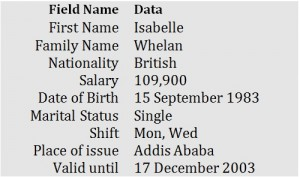
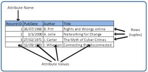
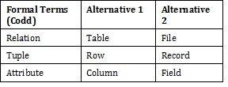
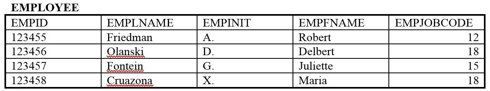

The Relational Data Model
نموذج البيانات العلائقي
المتن الرئيسي
Key Terms
atomic value: each value in the domain is indivisible as far as the relational model is concernedattribute: principle storage unit in a database
column: see attribute
degree: number of attributes in a table
domain: the original sets of atomic values used to model data; a set of acceptable values that a column is allowed to contain
field: see attribute
file:see relation
record: contains fields that are related; see tuple
relation: a subset of the Cartesian product of a list of domains characterized by a name; the technical term for table or file
row: see tuple
structured query language (SQL): the standard database access language
table:see relation
tuple: a technical term for row or record
Terminology Key
Several of the terms used in this chapter are synonymous. In addition to the Key Terms above, please refer to Table 7.1 below. The terms in the Alternative 1 column are most commonly used.
IMAGE3END Table 7.1. Terms and their synonyms by A. Watt.
قدَّم E. F. Codd نموذج البيانات العلائقي (relational data model) عام 1970. وهو في الوقت الحالي أكثر نماذج البيانات (data models) استخدامًا على نطاق واسع.
Exercises
Use Table 7.2 to answer questions 1-4.
Using correct terminology, identify and describe all the components in Table 7.2.
What is the possible domain for field EmpJobCode?
How many records are shown?
How many attributes are shown?
List the properties of a table.
IMAGE4END Table 7.2. Table for exercise questions, by A. Watt.
وفَّر النموذج العلائقي (relational model) الأساس لما يلي:
- البحث في نظرية البيانات والعلاقات (relationship) والقيود (constraint)
- منهجيات متعددة لتصميم قواعد البيانات
- لغة الوصول القياسية إلى قواعد البيانات والمسماة بلغة الاستعلام البنيوية (structured query language - SQL)
- كل أنظمة إدارة قواعد البيانات التجارية الحديثة تقريبًا
يصف نموذج البيانات العلائقي العالم بأنه «مجموعة من العلاقات المترابطة (أو الجداول)».
المفاهيم الأساسية في نموذج البيانات العلائقي
العلاقة (Relation)
العلاقة (relation)، المعروفة أيضًا باسم الجدول أو الملف، هي مجموعة جزئية من حاصل ضرب ديكارتية لقائمة من النطاقات (domains) تتميّز باسم. وداخل الجدول، يمثّل كل صف مجموعة من قيم البيانات المترابطة. ويُشار إلى الصف أيضًا بأنه سجل (record) أو زوج (tuple). أما أعمدة الجدول فهي حقول (field) ويُشار إليها أيضًا بأنها سمات (attributes). ويمكنك التفكير في الأمر هكذا: تُستخدم السمة (attribute) لتعريف السجل، ويحتوي السجل على مجموعة من السمات.
توضّح الخطوات التالية المنطق الكامن وراء العلاقة ونطاقاتها.
- لنفترض أن النطاقات n تُرمز إليها بـ D1 وD2 و… وDn
- وأن r هي علاقة معرَّفة على هذه النطاقات
- عندئذٍ r ⊆ D1×D2×…×Dn
الجدول (Table)
تتألف قاعدة البيانات من عدة جداول، ويحتفظ كل جدول بالبيانات. ويوضح الشكل 7.1 قاعدة بيانات تحتوي على ثلاثة جداول.

العمود (Column)
تخزّن قاعدة البيانات قطعًا من المعلومات أو وقائع بطريقة منظَّمة. ويتطلب فهم كيفية استخدام قواعد البيانات والحصول على أقصى استفادة منها أن نفهم طريقة التنظيم تلك.
تُسمَّى وحدات التخزين الرئيسة الأعمدة (columns) أو الحقول (fields) أو السمات (attributes). وهي تضم المكوّنات الأساسية للبيانات التي يمكن تفكيك محتواك إليها. وعندما تقرّر أي الحقول ستنشئها، عليك التفكير بصورة عامة في معلوماتك، أي استخراج المكوّنات المشتركة من المعلومات التي ستخزّنها في قاعدة البيانات، وتجنّب التفاصيل التي تميّز عنصرًا عن آخر.
انظر إلى مثال بطاقة تعريف في الشكل 7.2 لترى العلاقة بين الحقول وبياناتها.

النطاق (Domain)
النطاق (domain) هو مجموعة القيم الذرّية (atomic values) الأصلية المستخدمة لنمذجة البيانات. وبقصد القيمة الذرّية، نعني أن كل قيمة في النطاق غير قابلة للتجزئة insofar ما يتعلق الأمر بالنموذج العلائقي. فمثلًا:
- نطاق الحالة الاجتماعية (Marital Status) لديه مجموعة من الاحتمالات: متزوج، أعزب، مطلق.
- نطاق الوردية (Shift) لديه مجموعة كل الأيام الممكنة: {Mon, Tue, Wed…}.
- نطاق الراتب (Salary) هو مجموعة كل الأعداد العشرية (floating-point) الأكبر من 0 والأصغر من 200,000.
- نطاق الاسم الأول (First Name) هو مجموعة سلاسل الأحرف التي تمثّل أسماء الأشخاص.
باختصار، النطاق هو مجموعة القيم المقبولة التي يُسمح للعمود أن يحتويها. وهذا يستند إلى خصائص مختلفة وإلى نوع البيانات (data type) الخاص بالعمود. وسنناقش أنواع البيانات في فصل آخر.
السجلات (Records)
تمامًا كما يحتاج محتوى أي مستند أو عنصر إلى تفكيكه إلى أجزاء البيانات المكوّنة له ليُخزَّن في الحقول، فإن الروابط بينها تحتاج أيضًا إلى أن تكون متاحة حتى يمكن إعادة تركيبها إلى صيغتها الكاملة. تتيح لنا السجلات (records) القيام بذلك تحتوي السجلات على حقول مترابطة، مثل عميل أو موظف. وكما ذُكر سابقًا، فإن «الزوج» (tuple) مصطلح آخر يُستخدم للإشارة إلى السجل.
تشكّل السجلات والحقول أساس جميع قواعد البيانات. ويعطينا الجدول البسيط أوضح صورة لكيفية عمل السجلات والحقول معًا في مشروع تخزين قاعدة بيانات.

يبيّن لنا مثال الجدول البسيط في الشكل 7.3 كيف يمكن للحقول أن تضم مجموعة من البيانات المختلفة الأنواع. ويحتوي هذا الجدول على:
- حقل معرّف السجل (Record ID): هذا رقم ترتيبي؛ ونوع بياناته عدد صحيح.
- حقل تاريخ النشر (PubDate): يُعرض بصيغة يوم/شهر/سنة؛ ونوع بياناته تاريخ.
- حقل المؤلف (Author): يُعرض بالأحرف الأولى واللقب؛ ونوع بياناته نص.
- حقل نصي للعنوان (Title): يمكن إدخال نص حر هنا.
يمكنك أن تأمر قاعدة البيانات بأن تنقّب في بياناتها وتنظّمها بطريقة معينة. فمثلًا، يمكنك أن تطلب حصر مجموعة مختارة من السجلات حسب التاريخ: 1. كل ما يسبق تاريخًا معيّنًا، أو 2. كل ما يلي تاريخًا معيّنًا، أو 3. كل ما يقع بين تاريخين معيّنين. وبالمثل، يمكنك اختيار أن تُرتَّب السجلات حسب التاريخ. ولأن الحقل، أي السجل، الذي يحتوي على البيانات معدّ كحقل تاريخ (Date field)، فإن قاعدة البيانات تقرأ المعلومات الموجودة في حقل التاريخ لا بوصفها أرقامًا مفصولة بشرطات مائلة فحسب، بل بوصفها تواريخ يجب ترتيبها وفق نظام تقويم.
الدرجة (Degree)
الدرجة (degree) هي عدد السمات (attributes) في الجدول. وفي مثالنا في الشكل 7.3، الدرجة هي 4.
خصائص الجدول
- للجدول اسم يميّزه عن جميع الجداول الأخرى في قاعدة البيانات.
- لا توجد صفوف مكرّرة؛ كل صف مميّز.
- القيم في الأعمدة ذرّية (atomic). لا يحتوي الجدول على مجموعات متكررة ولا على سمات متعدّدة القيم.
- القيم في الأعمدة تنتمي إلى النطاق نفسه بناءً على نوع بياناتها، بما في ذلك: number (numeric, integer, float, smallint,…)
- character (string)
- date
- logical (true or false)
لا يُسمح بالعمليات التي تجمع بين أنواع بيانات مختلفة. لكل سمة اسم مميّز. وتسلسل الأعمدة غير مهم. وتسلسل الصفوف غير مهم.
القيمة الذرّية (atomic value): كل قيمة في النطاق غير قابلة للتجزئة insofar ما يتعلق الأمر بالنموذج العلائقي
السمة (attribute): وحدة التخزين الرئيسة في قاعدة البيانات
العمود (column): انظر السمة
الدرجة (degree): عدد السمات في الجدول
النطاق (domain): مجموعة القيم الذرّية الأصلية المستخدمة لنمذجة البيانات؛ مجموعة القيم المقبولة التي يُسمح للعمود أن يحتويها
الحقل (field): انظر السمة
الملف (file): انظر العلاقة
السجل (record): يحتوي على حقول مترابطة؛ انظر الزوج (tuple)
العلاقة (relation): مجموعة جزئية من حاصل ضرب ديكارتية لقائمة من النطاقات تتميّز باسم؛ المصطلح التقني للجدول أو الملف
الصف (row): انظر الزوج (tuple)
لغة الاستعلام البنيوية (structured query language - SQL): لغة الوصول القياسية إلى قواعد البيانات
الجدول (table): انظر العلاقة
الزوج (tuple): مصطلح تقني للصف أو السجل
مفتاح المصطلحات (Terminology Key)
عدة من المصطلحات المستخدمة في هذا الفصل مترادفة. وبالإضافة إلى المصطلحات المفتاحية أعلاه، يُرجى الرجوع إلى الجدول 7.1 أدناه. والمصطلحات الواردة في عمود «البديل 1» (Alternative 1) هي الأكثر شيوعًا في الاستخدام.

استخدم الجدول 7.2 للإجابة عن الأسئلة من 1 إلى 4.
- باستخدام المصطلحات الصحيحة، حدّد ووصف جميع المكوّنات في الجدول 7.2.
- ما النطاق المحتمل للحقل EmpJobCode؟
- كم عدد السجلات المعروضة؟
- كم عدد السمات المعروضة؟
- اذكر خصائص الجدول.

الإسناد (Attribution)
هذا الفصل من كتاب تصميم قواعد البيانات (Database Design)، بما في ذلك الصور باستثناء ما أُشير إليه خلاف ذلك، هو نسخة مشتقة من Relational Design Theory بقلم Nguyen Kim Anh، وهو مرخَّص بموجب رخصة المشاع الإبداعي: نسب العمل 3.0
كتبت المادة التالية Adrienne Watt:
- كل الأقسام أو بعضها المتعلقة بالعلاقات والجداول والأعمدة والدرجة
- المصطلحات المفتاحية
- التمارين